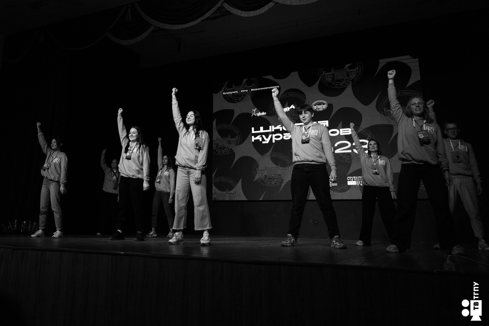
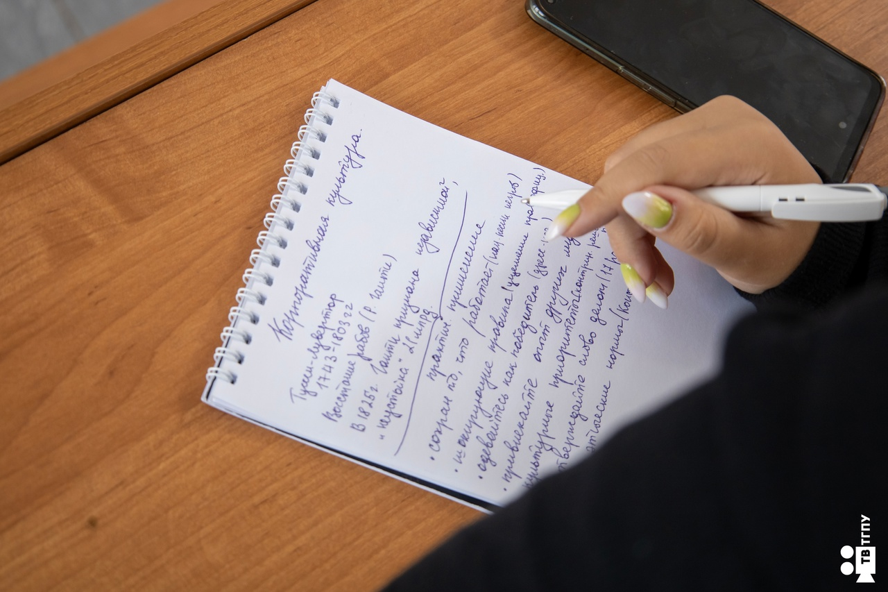

О проекте
Академия кураторов - это проект Студенческого совета ТГПУ, реализуемый инициативной группой студентов. Одна из основных задач куратора академической группы — помочь первокурсникам адаптироваться в вузе и влиться в учебный процесс, познакомить ребят с традициями факультета и университета, стать их другом и наставником.
 